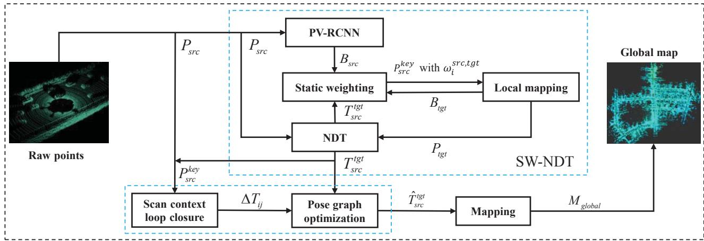
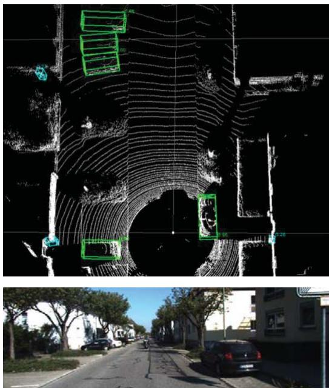
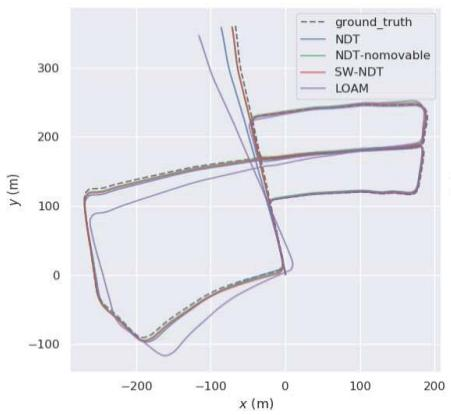
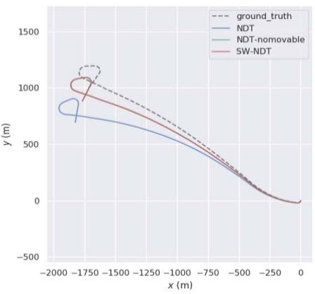

阶段 A · 建立坐标系 / Lesson 0005
动态环境下的激光 SLAM：给 NDT 加一个"静态权重"
这一节有个特殊之处：它原本被路线图标成了"激光方向的权威综述" ，但打开正文才发现它是一篇方法论文。我们按真实内容讲——而且它讲的问题很基础、很有代表性：动态物体会怎样伤害点云配准？ 🚗
🎯 主题：动态环境下的激光里程计
👥 Binbin Feng, Chunyun Fu, Lizhou Liao, Yun Zhu（重庆大学 / 陕西师范大学）
📅 2022 · Lidar-based SLAM in Dynamic Environments （原名含 Survey 属命名误配）
本节目标
读完你应该能：① 说清"帧间配准的静态世界假设"具体在哪里被打破；② 解释动态物体为什么不仅伤害位姿估计、还会伤害回环检测；③ 理解"给每个点加一个静态概率权重"这种软性处理思路。
路线图勘误（第 0001 课提过的那处）
路线图把这篇标为"LiDAR SLAM 综述（2022）· 激光方向的权威综述，第四章可当激光路线图用"。实际正文标题是 Lidar-based Simultaneous Localization and Mapping in Dynamic Environments ，作者为重庆大学冯彬彬等，是一篇讲动态环境的方法论文 。本课按真实内容讲，不把它当综述使用。
这件事的教训（值得单独说一句）
文件名里带 Survey 完全不代表它是综述——这篇的文件名是下载时按路线图意图起的，与正文不符。任何"按标题/文件名归类"的做法都会埋雷。 这也解释了为什么本课程坚持逐篇开正文核对。
1. 静态世界假设：激光 SLAM 最脆的那根神经
原文在引言里把问题说得非常直接。它先梳理了帧间配准的三大类方法：
类别 代表 做法
基于特征 LOAM
提取曲率大的角点与曲率小的面点，然后最小化"角点到线""面点到面"的距离来估计位姿
直接点云配准 ICP / GICP / NDT
ICP 最小化点到点距离；GICP 最小化面到面距离；NDT 最大化概率密度函数 来估计相对变换
多传感器融合 激光 + IMU
可分松耦合 与紧耦合 。原文明确：一般融合匹配比单纯点云匹配更准
然后原文给出了这一节最关键的一句判断：
关键句
上述所有帧间位姿估计方法，都建立在一个假设上——运行的场景是静态环境，或者场景中没有运动物体；而这一点在实际应用中是不现实的。
接着它给出因果链：运动物体上的观测点会在帧间匹配过程中导致错误的数据关联，进而使位姿估计结果大幅偏移甚至不收敛。此外，环境中存在运动物体还会导致回环检测的漏检与误检。
注意第二支：为什么动态物体还伤害回环检测？
很多人只想到第一支（位姿被带偏）。但原文明说了第二支：车辆、行人的移动会改变场景外观，使当前扫描与历史扫描"看起来不一样" ，于是真回环可能被漏掉；反过来，两处不同地点因为恰好都有类似的动态遮挡，也可能被误判成同一处。
把这一支和前面接上：第 0004 课讲回环检测的三种判据（map-to-map / image-to-image / image-to-map），其中"外观比对"这一路最怕的就是外观变化——而动态物体正是外观变化的头号来源。
2. 总体设计：三个模块
原文的方法由三个模块组成，结构非常清晰：
模块一：带静态权重的激光里程计
即 Static Weight NDT（SW-NDT） 。核心是把"静态权重"加入 NDT。所谓静态权重，描述的是"一个点云点属于静态物体的概率"。 目的是降低动态物体产生的点云对位姿估计的不利影响。
模块二：后端优化
用 Scan Context 检测当前帧与历史帧之间是否形成闭环；若检测到闭环，则执行位姿图优化（pose graph optimization） ，优化闭环内所有关键帧的位姿。
模块三：全局地图拼接
按照优化后的位姿，把各关键帧的点云拼起来，形成全局地图。

原图注（Fig. 1）： Pipeline of our 3D Lidar simultaneous localization and mapping system（本文三维激光 SLAM 系统的流程图）。
怎么看这张图： 把它和第 0003 课的那张"图优化三步"骨架图对照着看，你会发现结构完全一致——前端配准 → 回环检测 → 后端位姿图优化 → 拼全局地图 。差别只在前端多了一个"静态权重"的环节。这正是读论文该有的姿势：先看清它在哪个既有骨架的哪个零件上做了改动 ，而不是从头到尾重新理解一个系统。
静态权重从哪来？用 PV-RCNN 检测"可能运动的物体"
原文用 PV-RCNN （一个三维目标检测网络）来检测可能有运动的物体的三维包围框 。有了包围框，落在框内（或附近）的点云就可以被赋予较低的静态权重。

原图注（Fig. 2）： Use of PV-RCNN to detect the bounding boxes of objects with possible motion（用 PV-RCNN 检测可能有运动的物体的包围框）。
怎么看这张图： 这是"检测驱动动态过滤"这条路线在激光域的标准做法。请回忆第 0001 课导览里那张路线图——D-Fusion SLAM 那类视觉工作也是同一套路（先检测，再决定哪些点不参与几何）。视觉和激光在这个问题上的思路是高度同构的：先用语义/检测把"不可信区域"标出来，再让几何优化绕开它。
3. 核心机制：为什么是"权重"而不是"一刀切"
这里值得停下来体会设计思想。处理动态物体有两条路线：
路线 做法 代价
硬剔除 检测到是动态物体，就把框内所有点直接删掉
检测框通常不准（漏检、框偏大）；框内往往含有真实的静态背景点，删掉会损失信息
软加权 （本文）给每个点一个"属于静态物体的概率"，让这个概率进入优化的权重
需要额外算权重；但分类错误的代价更小
为什么"软加权"更稳
因为它是连续、可退化 的。如果检测器某一次把背景误判成动态物体，硬剔除会直接丢掉一批有效点，几何约束突然变少；而软加权只是把这批点的权重压低，如果它们本来就和其他约束一致，影响有限。反过来如果检测器漏检了一个运动物体，硬剔除完全没防住；软加权也不必完全正确——它只需要"大致压低"就能减轻污染。
这个"用概率/权重替代硬判定"的思路，你后面会在很多地方遇到：鲁棒核函数（第 0002 课）、贝叶斯滤波式回环检测（第 0004 课的 FAB-MAP）、不确定性建模（第 0010 课）。
为什么选择改造 NDT 而不是改造 LOAM？
请注意原文的措辞：它把静态权重"加入 NDT "。这是一个有意的选择。回顾上面对比：NDT 的思路是最大化概率密度函数 来求相对变换——也就是说，NDT 本来就是一个"把点云表示成概率分布再匹配"的方法。要把"某个点是静态的概率"融进去，在概率框架里是最自然的。
如果你去看 LOAM 那一类，它的误差项是"点到线距离""点到面距离"这种纯几何量，要引入静态概率就得额外加权——不是不能做，但不如 NDT 顺手。
一句话方法论
改造一个方法时，优先选择"机制上本来就接近"的那个作为宿主。 这一步的推理，比具体公式更能决定论文能否成立。
验证：KITTI 上的轨迹对比与全局地图
原文用 KITTI 数据集验证，结论是该方法在定位精度上优于另外三种方法 。原文给出了一组轨迹对比图，以及"有无后端优化"两种情形下的轨迹与全局点云地图。

原图注（Fig. 3）： Comparison between trajectories of SW-NDT and other methods using the KITTI dataset（在 KITTI 数据集上 SW-NDT 与其他方法的轨迹对比）。
怎么看这张图： 轨线对比图是激光里程计论文的"标准证据"。读的时候请不要只看"哪条线更贴近真值"，而要问：误差是均匀分布还是集中在某几段？ 如果误差集中出现，那段路很可能就是动态物体最密集的地方（跟车、会车、行人多），这才是"静态权重起作用"的直接证据。这个读图习惯在后面的 FAST-LIO / KISS-ICP 等课程里会一直用。

原图注（Fig. 4）： Vehicle trajectories and global point cloud maps. The blue and green trajectories represent the results of SW-NDT and the results after back-end optimization, respectively. The global maps are on the right（车辆轨迹与全局点云地图；蓝色为 SW-NDT 结果，绿色为后端优化后的结果；右侧为全局地图）。
怎么看这张图： 请左右对照——左（纯里程计）的轨迹会"漂"，右（加了回环与位姿图优化）的轨迹会闭合。 这就是第 0003 课"累积误差 → 回环检测 → 后端图优化"三步在真实数据上的样子。也请顺便注意：全局地图是在位姿优化之后 才拼的——先修位姿、再拼图，顺序不能反。
⚠️ 关于实验数据的一点提醒
原文的 Table I / Table II 分别给出"四种激光里程计方法未加回环 "与"加了后端优化 "的精度对比。这两张表是表格而非插图，本课程没有把它们作为图片贴出（按你的要求：不硬塞无意义的图）。如果你想核对具体数值，请直接打开 md/2022_LiDAR-SLAM-Survey.md 查 Table I / II。
4. 这一节和前面几课怎么接上
前面讲的 在本节的对应
第 0003 课 · 图优化三步（前端 → 回环 → 后端）
本文的 Fig. 1 就是这个骨架，只是前端多了一个"静态权重"环节。
第 0002 课 · 鲁棒损失函数（Huber / Tukey）抵抗外点
本文的"静态权重"是同一个思想在激光域 的具体化：不是换损失函数，而是给每个点预先估一个"可信度"。两者都在做"降低坏数据的发言权"。
第 0004 课 · 视觉 SLAM 失败三大主因之一：动态环境
本文把这第三条主因搬到了激光域。值得注意的是，激光对光照变化免疫（这是它相对相机的优势），但对动态物体同样敏感 ——因为动态物体在点云里同样是"移动的硬结构"，同样会破坏配准的静态假设。
第 0004 课 · 回环检测三种判据
本文的回环用 Scan Context （一种基于点云结构的描述子）而不是词袋。原因第 0008 课会讲：BoW 那套是为视觉设计的，对激光不那么直接适用。
互动判断
如果检测器（PV-RCNN）把一辆静止停放的卡车也检测出来并赋予低静态权重，会产生什么后果？
位姿会突然跳变，因为静态物体被当成了动态
会削弱一部分本来有效的几何约束，使配准变得更容易受噪声影响
没有任何影响，因为权重只是概率值
课后练习
请解释为什么"动态物体会导致回环检测的漏检与误检"，并分别说明这两种情况的成因。
展开查看答案
漏检：当前帧的扫描里被大量动态物体占据（比如前面堵着一排车），描述子算出来的结构与历史帧（当时那里是空的）差异很大，超过阈值，于是真回环被判为不匹配。误检：两处不同地点恰好都有相似的动态遮挡物（比如都停着一排类似的车、都有相似的围挡），使得它们的描述子意外地相似，从而被判为同一处。这也说明一件事：动态物体对回环检测的伤害，本质上是通过"改变外观/结构"实现的——所以应对方式通常是在描述子层面做鲁棒化，或在检测层面把动态区域先剔掉再算描述子。
本文用"静态权重"而不是"直接删掉动态点"。请举一个现实例子说明"硬剔除"会更糟的情形。
展开查看答案
典型例子是"动态物体占满视野"的场景：比如车辆跟在公交车后面通过一条隧道，或行人在狭窄走廊里走在机器人前面。此时检测框会覆盖画面/点云的大部分，硬剔除会直接删掉绝大多数点，导致帧间配准几乎没有约束可用，位姿估计直接失败或剧烈跳变。而软加权只是把这些点的权重整体压低，仍保留了少量背景结构的贡献，系统会表现为"精度变差但仍能跟踪"——对工程系统来说，"退化"远比"崩溃"可接受。
本节提到"一般融合匹配比单纯点云匹配更准"。请至少说出两个原因。
展开查看答案
① 激光提供精确的几何与结构信息（不受光照影响），IMU 提供高频的角速度与加速度，两者在不同时间尺度上互补；单一激光在快速运动或结构退化（长走廊、隧道）时约束不足，IMU 能在短时间内提供"运动先验"，帮助配准收敛到正确解。② 激光的帧率通常远低于 IMU，IMU 可以在两帧激光之间做递推，既提供更好的初值（降低配准搜索范围、减少落入坏局部最优的风险），也能补偿帧内运动畸变。另外，紧耦合还能让 IMU 的零偏被激光观测约束住（否则 IMU 自身的零偏会随时间漂移）。